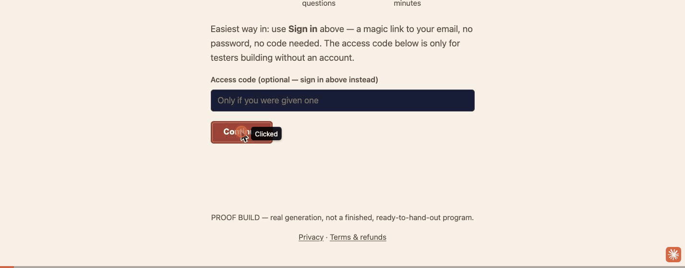
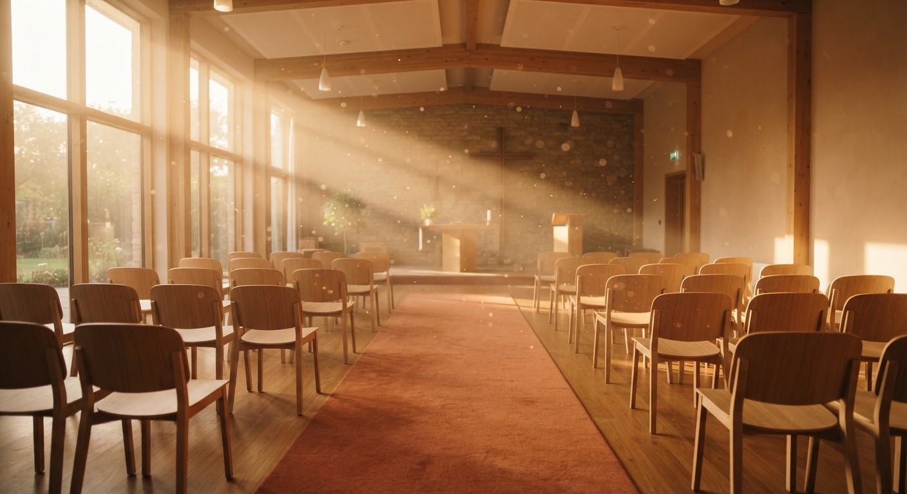

The reading
Scripture is pulled from a real text and can't be edited, so it stays accurate. Choose a reading, or take the daily one.
Sourced, never invented
Someone just asked you to lead Sunday's prayer. TendingDaily is a liturgy maker for exactly this night.
Not the writing. The responsibility. You care about the people in the room, and that is exactly why this feels so heavy. Here is what you get instead of a blank screen.
Scripture is pulled from a real text and can't be edited, so it stays accurate. Choose a reading, or take the daily one.
Sourced, never invented
Opening, readings, reflection, closing blessing. A structure to follow, so you shape the moment instead of staring at a blank page.
Fifteen minutes, max
A memorial, an assembly, a retreat. Choose your tradition and language, and it fits the people you are serving.
Booklet or slide deck
The blank-screen night that started this: a memorial prayer I was asked to give, and never forgot.
Br. Lou Page, fsc, TendingDaily founder
What felt overwhelming in the dark is now a finished booklet or slide deck. Fifteen minutes, max, often less. You choose the vessel.
One build. Two outputs. Toggle at the end.
Booklet
The memorial. Something to hold. Something to keep.
“This is for you.”
Slide deck
The parish gathering. Shared together. Seen by everyone.
“This is for us.”
You were asked because you care. The blank screen was never the problem. Not knowing you're allowed to shape the moment was.
Built last night, ready this morning.
A half-letter PDF set up to print and fold. Something to hold, something to keep.
The same build, toggled at the end. Shared together, seen by everyone.
Pulled from a real text and locked, so nobody has to wonder if it was changed.
AI-written parts are labeled as such, and a short link shows where everything came from.

Both are real, unedited output from the app — a memorial booklet and a school-assembly slide deck, built just now from the actual day's scripture.

That's the moment this app is built for: not to write it for you, but to give the fifteen minutes you have somewhere real to go.
The room feels like someone thought about them, because someone did.

Walk in Sunday knowing it's actually yours.
Might be asked, yourself
Sign in with a magic link. No password, no access code needed. Three builds a month included.
Leading a parish or school
No one pays in the moment they need this most.
Booklet or slide deck, fifteen minutes, max. No password, and three builds a month are free.
Early days: TendingDaily is a real, working app in active pilot, not a finished product with every rough edge sanded off yet. If something's off, that's useful to know, not a surprise. Scripture text can't be edited, to keep it accurate. Anything you upload is deleted within 24 hours.
It's a liturgy maker. You choose the occasion, the tradition and the readings, and in about fifteen minutes TendingDaily builds a prayer service you can print as a booklet or show as a slide deck.
Anyone who's said yes to leading a prayer: a youth group, a staff meeting, a memorial, a class Mass, a retreat. Parishes and schools can also license it for everyone who leads prayer there.
Two things from the same build: a print-ready half-letter PDF booklet, for a smaller room, and a slide deck, for a hall or a projector. You pick which one at setup, matched to the occasion, and can change it before you build.
Each build follows a familiar shape: opening, readings, reflection and closing blessing. You choose the tradition, the language and the type of event, and the service is built to fit.
Readings are pulled from the New American Bible, Revised Edition and locked, so nobody can edit them by accident or on purpose. What appears in your booklet is what's in the text, with the required copyright line attached.
Catholic, Ecumenical, Non-denominational and Lasallian traditions. Builds run in English, Spanish, Vietnamese and French today, with Tagalog and Urdu on the way.
Yes, for some parts, such as a draft reflection or prayer. Every AI-written section is labelled, and each build includes a short provenance link showing what came from Scripture, what came from you and what was generated. Scripture itself is never AI-written.
Yes, everything except the readings.
They're deleted within 24 hours; a cover photo is deleted the moment your build finishes rendering. If you sign in, we also keep your email and build count for as long as your account exists — see the privacy page for the full picture.
No. Enter your email and we'll send you a sign-in link. No password and no access code.
Individuals get three builds a month free. Parishes and schools can take out one institutional license: unlimited builds, with no need to set up accounts for each person. Email us for a quote.
Wait until next month, upgrade to pay per build, or ask your parish or school about a license.
Yes — email us for a 14-day free trial, no card needed.
Not yet. TendingDaily is in an active pilot for 2026, so you may hit a rough edge. If you do, tell us at ourenglish2019@gmail.com. We read every message.
Lou Page, fsc, a De La Salle Brother who has been the one up late before a prayer service more than once.